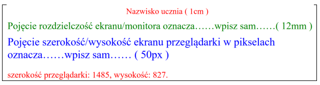
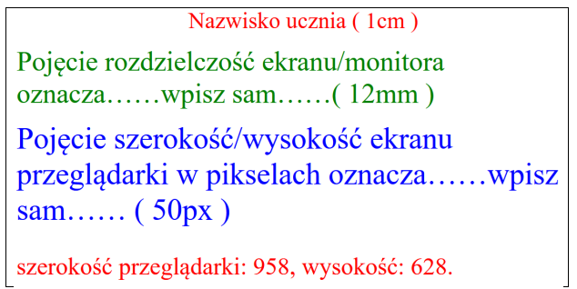

<!DOCTYPE html> <html lang="pl"> <head> <meta charset="UTF-8"> <meta name="viewport" content="width=device-width, initial-scale=1.0"> <title>Bielecki Z38</title> <style> #demo_bielecki { color: red; font-size: 40px; } </style> </head> <body> <div style="color: red;font-size: 1cm;text-align: center;">Bielecki ( 1cm ) </div><br> <div style="color: green;font-size: 12mm;"> Rozdzielczość ekranu to liczba pikseli wyświetlanych na ekranie, podawana jako szerokość × wysokość (np. 1920×1080). Im wyższa rozdzielczość, tym ostry i szczegółowy obraz. </div><br> <div style="color: blue;font-size: 50px;"> Szerokość i wysokość ekranu przeglądarki w pikselach to wymiary obszaru wyświetlania strony internetowej (tzw. viewport), mierzone w pikselach. Określają, ile pikseli dostępnych jest na szerokość i wysokość okna przeglądarki, w którym wyświetlana jest strona. </div><br> <p id="demo_bielecki"></p> <script> var w = window.innerWidth; var h = window.innerHeight; var x = document.getElementById("demo_bielecki"); x.innerHTML = "szerokość przeglądarki: " + w + ", wysokość: " + h + "."; </script> <p></p><br><p></p> </body> </html> <!-- Bielecki Z38_e2_JS -->